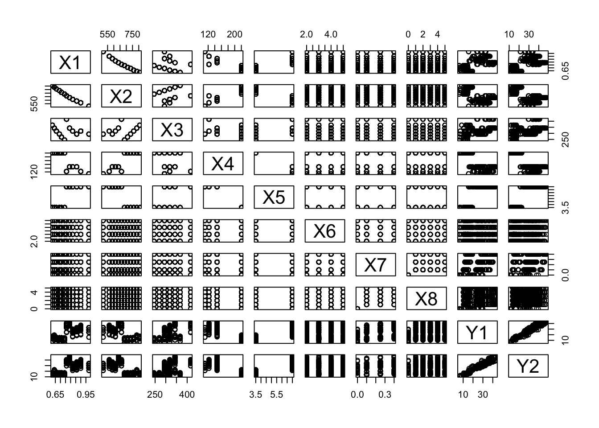

7 Modelos Lineares
A classe de Modelos Lineares atende a uma ampla gama de problemas aplicados, apresentada em profundidade por (Neter et al. 2005). Para uma introdução à classe de Modelos Lineares Generalizados recomenda-se (McCullagh and Nelder 1989).
7.1 Correlação
7.2 Regressão Linear Simples
7.2.1 Modelo
O modelo de Regressão Linear Simples universal/populacional é construído, pela abordagem clássica, com todos os \(N\) pares ordenados do universo, e pode ser descrito pela relação a seguir.
\[\begin{equation} Y_i = \beta_0 + \beta_1 X_i + \varepsilon_i, \tag{7.1} \end{equation}\] onde \(\varepsilon_i \sim \mathcal{N}(0,\sigma_{\varepsilon})\).
Na maioria dos casos práticos trabalha-se com amostras, sendo necessário estimar os valores de \(\beta_0\) e \(\beta_1\). O método dos mínimos quadrados (ordinários) é utilizado para calcular estas estimativas. O princípio do método é minimizar a soma de quadrado dos erros, i.e., \[\begin{equation} minimizar \sum_{i=1}^n \varepsilon_{i}^{2}. \tag{7.2} \end{equation}\]
7.2.2 Estimativas dos parâmetros
Basicamente utiliza-se \(\varepsilon_{i} = Y_{i} - \beta_0 - \beta_1 X_i\) da Eq. (7.1) e deriva-se (parcialmente) em relação a \(\beta_0\) e \(\beta_1\), fazendo cada uma das derivadas parciais igual a zero. Para maiores detalhes recomenda-se (DeGroot and Schervish 2012). As estimativas por mínimos quadrados são enfim dadas por \[\begin{equation} \hat{\beta}_1 = \frac{n \sum{x_i y_i} - \sum{x_i} \sum{y_i}}{n \sum{x_i^2} - (\sum{x_i})^2} \tag{7.3} \end{equation}\] e \[\begin{equation} \hat{\beta}_0 = \bar{y} - \hat{\beta}_1 \bar{x}. \tag{7.4} \end{equation}\]
7.2.3 Análise de diagnóstico
Teste para \(\beta_0\)
As hipóteses usuais do teste para \(\beta_0\) são \(H_0: \beta_0 = 0\) vs \(H_1: \beta_0 \ne 0\). Sob \(H_0\) \[\begin{equation} T_0 = \frac{\hat{\beta}_0}{ep(\hat{\beta}_0)} \sim t_{n-2}, (\#eq:teste_b0) \end{equation}\] onde \[\begin{equation} ep(\hat{\beta}_0) = \sqrt{\hat{\sigma}^2 \left[ \frac{1}{n} + \frac{\bar{x}^2}{S_{xx}} \right] } = \sqrt{\frac{\sum_{i=i}^n (y_i - \hat{y}_i)^2}{n-2} \left[ \frac{1}{n} + \frac{\bar{x}^2}{\sum_{i=i}^n (x_i - \bar{x})^2} \right] }. (\#eq:ep_b0) \end{equation}\]
Teste para \(\beta_1\)
O teste para \(\beta_1\) é fundamental na análise de diagnóstico. É com ele que decide-se a respeito da presença ou ausência de relação linear entre \(X\) e \(Y\). As hipóteses usuais do teste para \(\beta_1\) são \(H_0: \beta_1 = 0\) vs \(H_1: \beta_1 \ne 0\). Sob \(H_0\) \[\begin{equation} T_1 = \frac{\hat{\beta}_1}{ep(\hat{\beta}_1)} \sim t_{n-2}, \tag{7.5} \end{equation}\] onde \[\begin{equation} ep(\hat{\beta}_1) = \sqrt{\frac{\hat{\sigma}^2}{S_{xx}}} = \sqrt{\frac{\sum_{i=i}^n (y_i - \hat{y}_i)^2 / (n-2)}{\sum_{i=i}^n (x_i - \bar{x})^2} }. (\#eq:ep_t1) \end{equation}\]
7.2.4 Modelo RPO
Um modelo na forma da Eq. (7.6) é chamado regressão pela origem pelo fato de a reta ajustada passar pelo ponto \((0,0)\), a origem do plano cartesiano. \[\begin{equation} Y_i = \beta_1 X_i + \varepsilon_i, \tag{7.6} \end{equation}\] onde \(\varepsilon_i \sim \mathcal{N}(0,\sigma_{\varepsilon})\). A estimativa do parâmetro \(\beta_1\) é dada por \[\begin{equation} \hat{\beta}_1 = \frac{\sum{x_i y_i} }{\sum{x_i^2} }. (\#eq:beta1_rpo) \end{equation}\]
Teste para \(\beta_1\) do modelo RPO
\[\begin{equation} T_1^{RPO} = \frac{\hat{\beta}_1}{ep(\hat{\beta}_1)} \sim t_{n-1}, (\#eq:teste_beta1_rpo) \end{equation}\] onde \[\begin{equation} ep(\hat{\beta}_1) = \sqrt{\frac{\hat{\sigma}^2}{S_{xx}}} = \sqrt{\frac{\sum_{i=i}^n (y_i - \hat{y}_i)^2 / (n-1)}{\sum_{i=i}^n x_{i}^{2} } }. (\#eq:ep_beta1_rpo) \end{equation}\]
x <- read.table('http://www.filipezabala.com/data/drinks.txt', header = T, sep = '\t')
dim(x) # dimensão de x## [1] 30 2## temp gar
## 1 29.5 145
## 2 31.3 170
## 3 34.7 167
## 4 40.4 244
## 5 28.4 159
## 6 40.3 195##
## Call:
## lm(formula = gar ~ temp, data = x)
##
## Residuals:
## Min 1Q Median 3Q Max
## -44.16 -8.96 3.58 10.81 33.60
##
## Coefficients:
## Estimate Std. Error t value Pr(>|t|)
## (Intercept) -19.334 22.944 -0.84 0.41
## temp 5.920 0.674 8.78 1.6e-09 ***
## ---
## Signif. codes: 0 '***' 0.001 '**' 0.01 '*' 0.05 '.' 0.1 ' ' 1
##
## Residual standard error: 18.3 on 28 degrees of freedom
## Multiple R-squared: 0.734, Adjusted R-squared: 0.724
## F-statistic: 77.1 on 1 and 28 DF, p-value: 1.57e-09##
## Call:
## lm(formula = gar ~ temp - 1, data = x)
##
## Residuals:
## Min 1Q Median 3Q Max
## -45.78 -11.26 3.53 12.01 30.29
##
## Coefficients:
## Estimate Std. Error t value Pr(>|t|)
## temp 5.3582 0.0975 55 <2e-16 ***
## ---
## Signif. codes: 0 '***' 0.001 '**' 0.01 '*' 0.05 '.' 0.1 ' ' 1
##
## Residual standard error: 18.2 on 29 degrees of freedom
## Multiple R-squared: 0.99, Adjusted R-squared: 0.99
## F-statistic: 3.02e+03 on 1 and 29 DF, p-value: <2e-16(a) Indique os valores de \(n\) e \(p\).
(b) No modelo de regressão linear simples atribuído a
fit, indique os números das equações para o cálculo das medidas Estimate, Std. Error e t value.(c) Utilizado a linguagem R, aplique as equações indicadas no item (b) de forma a obter os valores indicados em
summary(fit).(d) No modelo de regressão pela origem atribuído a
fit0, indique os números das equações para o cálculo das medidas Estimate, Std. Error e t value.(e) Utilizado a linguagem R, aplique as equações indicadas no item (d) de forma a obter os valores indicados em
summary(fit0).(f) Qual o modelo mais indicado segundo a sua análise? Justifique.
7.3 Regressão Linear Múltipla
O modelo de regressão linear múltipla universal/populacional é construído, pela abordagem clássica, com todos os \(N\) pares ordenados do universo, e pode ser descrito pela relação a seguir.
\[\begin{equation} Y_i = \beta_0 + \beta_1 X_{i1} + \beta_2 X_{i2} + \cdots + \beta_p X_{ip} + \varepsilon_i, \tag{7.7} \end{equation}\] \(\varepsilon_i \sim \mathcal{N}(0,\sigma_{\varepsilon})\). Por ter dimensionalidade \(p\) usualmente utiliza-se notação matricial na forma
\[\begin{equation} \boldsymbol{Y} = \boldsymbol{X} \boldsymbol{\beta} + \boldsymbol{\varepsilon}, \tag{7.8} \end{equation}\] onde \(\boldsymbol{Y} = \begin{bmatrix} Y_1 \\ Y_2 \\ \vdots \\ Y_n \end{bmatrix}\), \(\boldsymbol{X} = \begin{bmatrix} 1 & X_{11} & X_{12} & \cdots & X_{1p} \\ 1 & X_{21} & X_{22} & \cdots & X_{2p} \\ \vdots & \vdots & \vdots & \ddots & \vdots \\ 1 & X_{n1} & X_{n2} & \cdots & X_{np} \end{bmatrix}\), \(\boldsymbol{\beta} = \begin{bmatrix} \beta_1 \\ \beta_2 \\ \vdots \\ \beta_n \end{bmatrix}\) e \(\boldsymbol{\varepsilon} = \begin{bmatrix} \varepsilon_1 \\ \varepsilon_2 \\ \vdots \\ \varepsilon_n \end{bmatrix}\).
Para a obtenção das estimativas dos parâmetros utiliza-se a Eq. (7.9). \[\begin{equation} \boldsymbol{\hat{\beta}} = (\boldsymbol{X'X})^{-1} (\boldsymbol{X'X}) \boldsymbol{Y} \tag{7.9} \end{equation}\]
Example 7.2 No site http://archive.ics.uci.edu/ml/datasets/Energy+efficiency está disponível uma análise de energia feita por (Tsanas and Xifara 2012) usando 12 formas diferentes de construção simuladas no Ecotect. Os edifícios diferem em relação à área envidraçada, à distribuição da área envidraçada e à orientação, entre outros parâmetros. Foram simuladas várias configurações como funções das características acima mencionadas para obter 768 formas de construção. O conjunto de dados detalhado a seguir compreende 768 amostras e 8 características (X1 a X8), com o objetivo de prever duas respostas reais (Y1 e Y2).
X1: Compactação RelativaX2: SuperfícieX3: Área da paredeX4: Área do telhadoX5: Altura totalX6: OrientaçãoX7: Área de EnvidraçamentoX8: Distribuição da Área de EnvidraçamentoY1: Carga de aquecimentoY2: Carga de resfriamento
library(readxl)
url1 <- 'http://archive.ics.uci.edu/ml/machine-learning-databases/00242/ENB2012_data.xlsx'
download.file(url1, 'temp.xlsx', mode = 'wb')
energy <- read_excel('temp.xlsx')
str(energy) # dando uma olhada nas variáveis## tibble [768 × 10] (S3: tbl_df/tbl/data.frame)
## $ X1: num [1:768] 0.98 0.98 0.98 0.98 0.9 0.9 0.9 0.9 0.86 0.86 ...
## $ X2: num [1:768] 514 514 514 514 564 ...
## $ X3: num [1:768] 294 294 294 294 318 ...
## $ X4: num [1:768] 110 110 110 110 122 ...
## $ X5: num [1:768] 7 7 7 7 7 7 7 7 7 7 ...
## $ X6: num [1:768] 2 3 4 5 2 3 4 5 2 3 ...
## $ X7: num [1:768] 0 0 0 0 0 0 0 0 0 0 ...
## $ X8: num [1:768] 0 0 0 0 0 0 0 0 0 0 ...
## $ Y1: num [1:768] 15.6 15.6 15.6 15.6 20.8 ...
## $ Y2: num [1:768] 21.3 21.3 21.3 21.3 28.3 ...
fit0 <- lm(Y1 ~ X1 + X2 + X3 + X4 + X5 + X6 + X7 + X8, data = energy) # modelo saturado
summary(fit0)##
## Call:
## lm(formula = Y1 ~ X1 + X2 + X3 + X4 + X5 + X6 + X7 + X8, data = energy)
##
## Residuals:
## Min 1Q Median 3Q Max
## -9.897 -1.320 -0.025 1.353 7.705
##
## Coefficients: (1 not defined because of singularities)
## Estimate Std. Error t value Pr(>|t|)
## (Intercept) 84.01342 19.03361 4.41 1.2e-05 ***
## X1 -64.77343 10.28945 -6.30 5.2e-10 ***
## X2 -0.08729 0.01708 -5.11 4.0e-07 ***
## X3 0.06081 0.00665 9.15 < 2e-16 ***
## X4 NA NA NA NA
## X5 4.16995 0.33799 12.34 < 2e-16 ***
## X6 -0.02333 0.09470 -0.25 0.8055
## X7 19.93274 0.81399 24.49 < 2e-16 ***
## X8 0.20378 0.06992 2.91 0.0037 **
## ---
## Signif. codes: 0 '***' 0.001 '**' 0.01 '*' 0.05 '.' 0.1 ' ' 1
##
## Residual standard error: 2.93 on 760 degrees of freedom
## Multiple R-squared: 0.916, Adjusted R-squared: 0.915
## F-statistic: 1.19e+03 on 7 and 760 DF, p-value: <2e-16## Start: AIC=1661
## Y1 ~ X1 + X2 + X3 + X4 + X5 + X6 + X7 + X8
##
##
## Step: AIC=1661
## Y1 ~ X1 + X2 + X3 + X5 + X6 + X7 + X8
##
## Df Sum of Sq RSS AIC
## - X6 1 1 6544 1659
## <none> 6544 1661
## - X8 1 73 6617 1668
## - X2 1 225 6769 1685
## - X1 1 341 6885 1698
## - X3 1 721 7264 1740
## - X5 1 1311 7854 1800
## - X7 1 5163 11707 2106
##
## Step: AIC=1659
## Y1 ~ X1 + X2 + X3 + X5 + X7 + X8
##
## Df Sum of Sq RSS AIC
## <none> 6544 1659
## - X8 1 73 6617 1666
## - X2 1 225 6769 1683
## - X1 1 341 6886 1697
## - X3 1 721 7265 1738
## - X5 1 1311 7855 1798
## - X7 1 5163 11707 2104##
## Call:
## lm(formula = Y1 ~ X1 + X2 + X3 + X5 + X7 + X8, data = energy)
##
## Residuals:
## Min 1Q Median 3Q Max
## -9.931 -1.319 -0.026 1.359 7.717
##
## Coefficients:
## Estimate Std. Error t value Pr(>|t|)
## (Intercept) 83.93176 19.01898 4.41 1.2e-05 ***
## X1 -64.77343 10.28310 -6.30 5.1e-10 ***
## X2 -0.08729 0.01706 -5.12 4.0e-07 ***
## X3 0.06081 0.00664 9.15 < 2e-16 ***
## X5 4.16995 0.33778 12.35 < 2e-16 ***
## X7 19.93274 0.81348 24.50 < 2e-16 ***
## X8 0.20378 0.06987 2.92 0.0036 **
## ---
## Signif. codes: 0 '***' 0.001 '**' 0.01 '*' 0.05 '.' 0.1 ' ' 1
##
## Residual standard error: 2.93 on 761 degrees of freedom
## Multiple R-squared: 0.916, Adjusted R-squared: 0.916
## F-statistic: 1.39e+03 on 6 and 761 DF, p-value: <2e-16Após o primeiro ajuste atribuído a fit0 é possível notar que o coeficiente da variável X4 não é possível de ser calculado devido a singularidades, i.e, impossibilidade de inversão das matrizes do modelo. Sendo assim, ao modelo saturado (contendo todas as variáveis candidatas) aplicou-se o método de stepwise, proposto por (Efroymson 1960) e utilizado para selecionar variáveis. Este método busca automaticamente o melhor conjunto de variáveis de maneira a minimizar alguma medida, usualmente o Critério de Informação de Akaike (AIC, na sigla em inglês), sugerido por (Akaike 1974). De acordo com a métrica do stepwise, quanto menor o valor de AIC, melhor a combinação das variáveis.
Pelos resultados obtidos pode-se verificar que o modelo ajustado em fit1 possui todas as variávies significativas para um \(\alpha\) inferior a 0.01, estatística F de 1387 para 6 e 761 graus de liberdade, levando a um p-value geral do modelo menor que \(2.2 \times 10^{-16}\), o que indica boa aderência aos dados. O valor do Multiple R-squared é de 0.9162, indicando que o modelo explica em torno de 92% da variação de Y1. Desta forma este é um modelo aceitável, que possui coeficientes de X1 e X2 negativos, indicando que um aumento destas variáveis (respectivamente compactação relativa e superfície) deve reduzir a carga de aquecimento. Mais especificamente, um aumento de uma unidade na compactação relativa (X1) gera uma redução esperada de 64.77 unidades na carga de aquecimento, mantidas constantes as demais variáveis. As variáveis X3, X5, X7 e X8 possuem coeficientes positivos, levando a um impacto esperado positivo em Y1. Como exemplo, para cada aumento de uma unidade na altura total (X5) espera-se um aumento aproximando de 4.17 unidades na carga de aquecimento. As outras variáveis possuem interpretação análoga, devendo-se sempre observar o sinal dos coeficientes.
Y2 como resposta, ajustando o modelo saturado, filtrando as variáveis com a função step e interpretando os resultados.
7.4 Regressão Logística
7.4.1 Variáveis binárias/dicotômicas
Em problemas aplicados é comum fazer uso de variáveis aleatórias que admitam apenas dois valores, chamadas v.a. binárias ou dicotômicas. Empresas de serviços financeiros podem estar interessados em clientes adimplentes/inadimpletes, hospitais em pacientes com/sem melhora, cientistas da computação em servidores operantes/inoperantes, etc. Começamos com um exemplo numérico para ilustrar.
Se considerarmos 40 clientes, 20 inadimplentes e 20 adimplentes, pode-se calcular a probabilidade (incondicional) de observar um ciente inadimplente (sucesso) por \(Pr(Y=1)=\frac{20}{40}=0.5\). Da mesma forma, a probabilidade (incondicional) de observar um ciente adimplente (fracasso) é dada por \(Pr(Y=0)=\frac{20}{40}=0.5\). Utilizando a linguagem R pode-se gerar a sequência de zeros e uns descrita acima, bem como as respectivas probabilidades.
## [1] 0 0 0 0 0 0 0 0 0 0 0 0 0 0 0 0 0 0 0 0 1 1 1 1 1 1 1 1 1 1 1 1 1 1 1 1 1 1 1 1## y
## 0 1
## 20 20## y
## 0 1
## 0.5 0.5Vendo a questão desta maneira pode-se considerar que a probablidade de um cliente ser inadimplente é de 50%. É possível, porém, considerar outras variáveis para refinar esta probabilidade. Suponha uma variável \(X_1\), que ocorre em aproximadamente 20% dos clientes adimplentes (\(Y=0\)) e em aproximadamente 90% dos clientes inadimplentes (\(Y=1\)). Assim, visto que presença da variável \(X_1\) é maior entre os inadimplentes, intuitivamente devemos atribuir uma probabilidade maior de inadimplência a clientes que apresentem a característica \(X_1\), e menor para aquele onde a característica \(X_1\) é ausente. Novamente podemos fazer uso da linguagem R para gerar sequências similares àquelas consideradas na teoria.
suppressMessages(library(tidyverse))
set.seed(1); (x1 <- c(rbinom(n,1,.2), rbinom(n,1,.9))) # gerando sequência pseudoaleatória## [1] 0 0 0 1 0 1 1 0 0 0 0 0 0 0 0 0 0 1 0 0 0 1 1 1 1 1 1 1 1 1 1 1 1 1 1 1 1 1 1 1Note na saída abaixo que o segmento indicado por \(\texttt{\$}\)`\(\texttt{0}\)` refere-se ao grupo onde \(X_1=0\), e \(\texttt{\$}\)`\(\texttt{1}\)` onde \(X_1=1\).
by(y,x1,table) %>% # contando o número de zeros e uns em y separado por x1
lapply(prop.table) # calculando as proporções ## $`0`
##
## 0 1
## 0.9412 0.0588
##
## $`1`
##
## 0 1
## 0.174 0.826Note que a probabilidade de inadimplência no grupo onde \(X_1\) não é observada é igual a \(Pr(Y=1|X_1=0) = 0.05882353\). No grupo de clientes que apresentam a característica \(X_1\) esta probabilidade sobe para \(Pr(Y=1|X_1=1) = 0.826087\).
Finalmente é considerada uma variável \(X_2\), que aparece em aproximadamente metade dos clientes inadimplentes e em aproximadamente metade dos adimplentes. Assim, observar a característica \(X_2\) não deve trazer informação sobre a probabilidade de inadimplência, simbolizada pela probabilidade condicional \(Pr(Y=1|X_2 = x_2)\), \(x_2 \in \{0,1\}\).
## [1] 0 0 1 1 0 1 1 1 1 0 0 0 1 0 1 0 1 1 0 1 1 0 1 0 0 0 0 0 1 0 0 1 0 0 1 1 1 0 1 0by(y,x2,table) %>% # contando os zeros e uns de y, separados pelos valores de X2
lapply(prop.table) # transformando a contagem em proporção## $`0`
##
## 0 1
## 0.429 0.571
##
## $`1`
##
## 0 1
## 0.579 0.4217.4.2 O modelo de regressão logística
A regressão logística pertence à classe dos modelos lineares generalizados, descrita em detalhes por (McCullagh and Nelder 1989), (Agresti 2007) e (Paula 2013). Seja \(Y\) uma variável aleatória binária com distribuição binimial de probablidade de sucesso \(\pi(x)\). A notação \(\pi(x)\) sugere que a probabilidade de sucesso está condicionada a um valor/categoria \(x\). Desta forma, \(\pi(x) = Pr(Y=1|X=x)\). Define-se a função logito conforme a Eq. @ref(eq:logit_uni), onde \(\mathrm{log}\) indica o logaritmo na base \(e \approx 2.718281828459\).
\[\begin{equation} \mathrm{logito}\left[ \pi(x) \right] = \mathrm{log} \left( \dfrac{\pi(x)}{1-\pi(x)} \right) = \beta_0 + \beta_1 x (\#eq:logit_uni) \end{equation}\] Isolando \(\pi(x)\) na Eq. @ref(eq:logit_uni) obtém-se
\[\begin{equation} \pi(x) = \dfrac{e^{\beta_0 + \beta_1 x}}{1+e^{\beta_0 + \beta_1 x}} (\#eq:pix_uni) \end{equation}\]
# modelo 1
x1 <- as.factor(x1) # convertendo em fator para usar a função glm
fit1 <- glm(y ~ x1, family = 'binomial') # ajustando modelo logístico
summary(fit1) # detalhamento do modelo##
## Call:
## glm(formula = y ~ x1, family = "binomial")
##
## Deviance Residuals:
## Min 1Q Median 3Q Max
## -1.870 -0.348 0.135 0.618 2.380
##
## Coefficients:
## Estimate Std. Error z value Pr(>|z|)
## (Intercept) -2.77 1.03 -2.69 0.00715 **
## x11 4.33 1.17 3.71 0.00021 ***
## ---
## Signif. codes: 0 '***' 0.001 '**' 0.01 '*' 0.05 '.' 0.1 ' ' 1
##
## (Dispersion parameter for binomial family taken to be 1)
##
## Null deviance: 55.452 on 39 degrees of freedom
## Residual deviance: 28.860 on 38 degrees of freedom
## AIC: 32.86
##
## Number of Fisher Scoring iterations: 5Note que o intercepto \(\hat{\beta}_0 = -2.773\) é significativo (\(p-value = 0.00715\)), bem como o coeficiente que indica a presença do atributo \(X_1\), \(\hat{\beta}_1 = 4.331\) (\(p-value = 0.00021\)). Assim, pode-se considerar o modelo conforme Eq. @ref(eq:logit_uni), na forma \[\mathrm{log} \left( \dfrac{\pi(x)}{1-\pi(x)} \right) = -2.773 + 4.331 I_{x_1}. \] A simbologia \(I_{x_1}\) indica uma variável indicadora da presença do atributo \(X_1\). Assim, se a pessoa possuir o atributo \(X_1\) considera-se \(I_{x_1}=1\), e \(I_{x_1}=0\) caso contrário. Este é um modelo conhecido como casela de referência, visto que a variável \(X_1\) é categórica. Desta forma, uma das categorias/níveis da variável é escolhida como a (casela de) referência. Por padrão, o R utiliza a primeira da ordem numérica/alfabética, no caso \(X_1=0\). Desta forma, se a pessoa não possui a característica \(X_1\), pode-se calcular sua probabilidade de inadimplência pela Eq. @ref(eq:pix_uni), dada por \[Pr(Y=1|X_1=0) = \pi(0) = \dfrac{e^{-2.773 + 4.331 \times 0}}{1+e^{-2.773 + 4.331 \times 0}} \approx 0.05882353.\] No caso de alguém que possui a característica \(X_1\), \[Pr(Y=1|X_1=1) = \pi(1) = \dfrac{e^{-2.773 + 4.331 \times 1}}{1+e^{-2.773 + 4.331 \times 1}} \approx 0.826087.\]
## (Intercept)
## 0.0588## [1] 0.826O mesmo procedimento considerado para \(X_1\) pode ser realizado para \(X_2\). Note que o intercepto \(\hat{\beta}_0 = 0.2877\) é não significativo (\(p-value = 0.514\)), bem como o coeficiente que indica a presença do atributo \(X_2\), \(\hat{\beta}_1 = -0.6061\) (\(p-value = 0.344\)).
# modelo 2
x2 <- as.factor(x2) # convertendo em fator para usar a função glm
fit2 <- glm(y ~ x2, family = 'binomial') # ajustando modelo logístico
summary(fit2) # detalhamento do modelo##
## Call:
## glm(formula = y ~ x2, family = "binomial")
##
## Deviance Residuals:
## Min 1Q Median 3Q Max
## -1.3018 -1.0455 0.0062 1.0579 1.3153
##
## Coefficients:
## Estimate Std. Error z value Pr(>|z|)
## (Intercept) 0.288 0.441 0.65 0.51
## x21 -0.606 0.641 -0.95 0.34
##
## (Dispersion parameter for binomial family taken to be 1)
##
## Null deviance: 55.452 on 39 degrees of freedom
## Residual deviance: 54.546 on 38 degrees of freedom
## AIC: 58.55
##
## Number of Fisher Scoring iterations: 4Desta maneira o modelo não deve ser utilizado, mas para efeito de comparação com os resultados do Exemplo 8.1 são calculadas as probabilidades de sucesso condicionadas a \(X_2=0\) e \(X_2=1\).
## (Intercept)
## 0.571## [1] 0.421# lendo e arrumando os dados
dat <- read.table('https://archive.ics.uci.edu/ml/machine-learning-databases/adult/adult.data',
sep = ',')
dat <- dat[,-c(3,9)]
colnames(dat) <- c('idade','tipoTrabalho','educacao','anosEstudo','estadoCivil','ocupacao',
'relacao','genero','ganhoCapital','perdaCapital','horasPorSemana',
'paisOrigem','salario')Referências
Agresti, Alan. 2007. An Introduction to Categorical Data Analysis. Wiley. https://mregresion.files.wordpress.com/2012/08/agresti-introduction-to-categorical-data.pdf.
Akaike, Hirotugu. 1974. “A New Look at the Statistical Model Identification.” In Selected Papers of Hirotugu Akaike, 215–22. Springer.
DeGroot, Morris H, and Mark J Schervish. 2012. Probability and Statistics. Pearson Education.
Efroymson, MA. 1960. “Multiple Regression Analysis.” Mathematical Methods for Digital Computers, 191–203.
McCullagh, Peter, and John Ashworth Nelder. 1989. Generalized Linear Models. Chapman Hall, London. 2nd ed. http://www.utstat.toronto.edu/~brunner/oldclass/2201s11/readings/glmbook.pdf.
Neter, John, Michael H Kutner, Christopher J Nachtsheim, and William Wasserman. 2005. Applied Linear Statistical Models. 5th ed. McGraw Hill/Irwin New York. https://mysite.science.uottawa.ca/rkulik/mat3378/mat3378-textbook.pdf.
Paula, Gilberto Alvarenga. 2013. Modelos de Regressão: Com Apoio Computacional. IME-USP São Paulo. https://www.ime.usp.br/~giapaula/texto_2013.pdf.
Tsanas, Athanasios, and Angeliki Xifara. 2012. “Accurate Quantitative Estimation of Energy Performance of Residential Buildings Using Statistical Machine Learning Tools.” Energy and Buildings 49: 560–67. http://people.maths.ox.ac.uk/tsanas/Preprints/ENB2012.pdf.